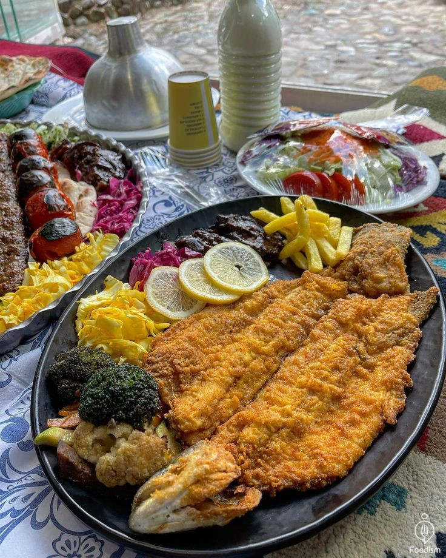

Explore delicious Recipe for every occasion!
Fried Fish is a traditional and delicious Iranian dish often served with rice or bread. it is usually made with white fish, trout, or southern fish varieties.
A Slice You will Never Forget! Take one bite of our pizza and get ready to fall in love!